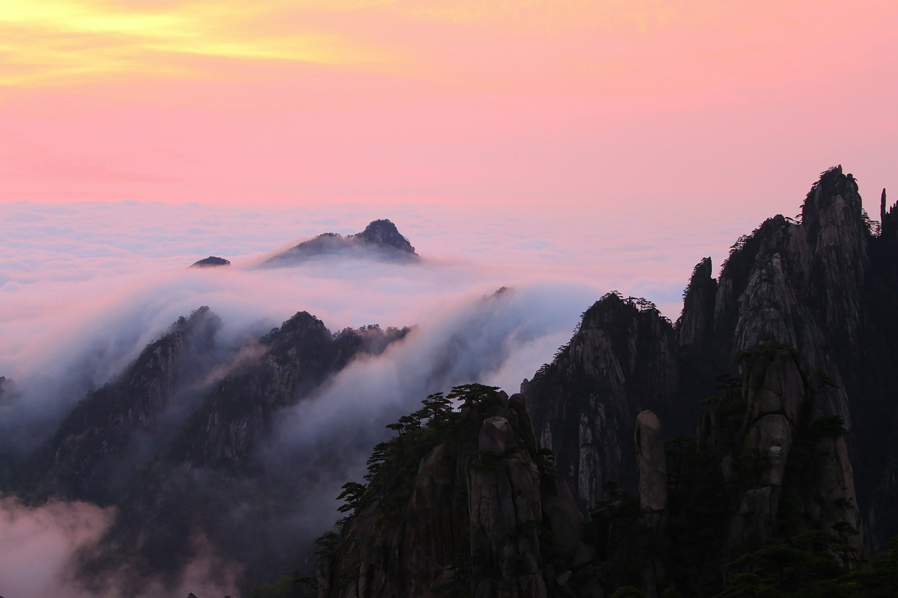

自然 · 山岳
黄山
安徽 · 黄山奇松、怪石与云海，让山路的每一次转弯都出现新的风景。
关于黄山
黄山拥有变化丰富的山峰与岩石景观。 山间步道连接不同高度的观景区域，也形成了多种登山路线。
清晨适合观察日出与云海，傍晚则能看到山体轮廓随光线逐渐变化。
推荐体验
- 在高处观察云海变化
- 沿步道寻找不同形态的松树
- 清晨观看山间日出

自然 · 山岳
奇松、怪石与云海，让山路的每一次转弯都出现新的风景。
黄山拥有变化丰富的山峰与岩石景观。 山间步道连接不同高度的观景区域，也形成了多种登山路线。
清晨适合观察日出与云海，傍晚则能看到山体轮廓随光线逐渐变化。